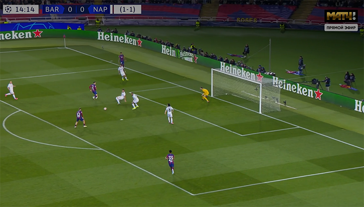
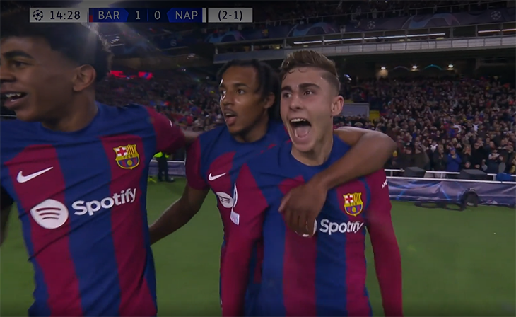
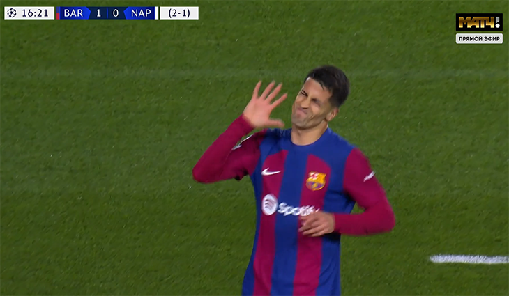
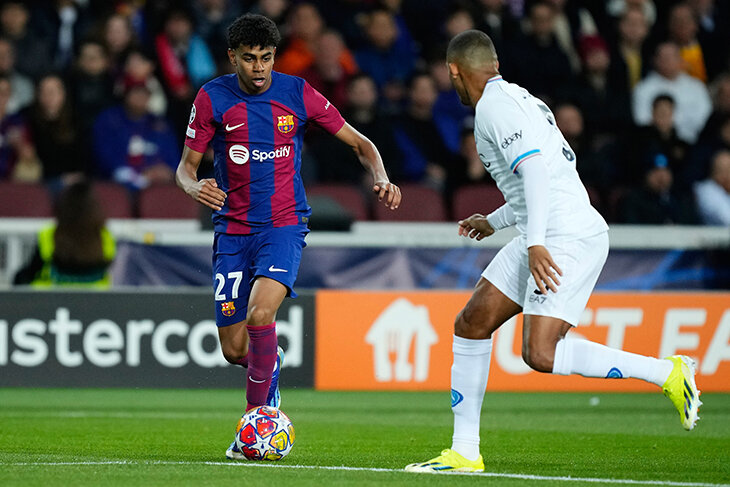
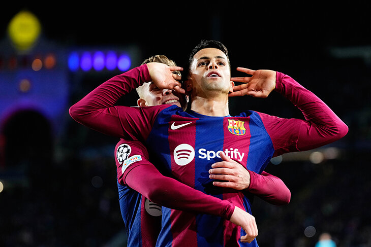

«Барса» уложила «Наполи» в ЛЧ за две минуты. С двумя подростками в основе!
Жюль Кунде – неочевидный герой.
«Барселона» прошла «Наполи» в 1/8 финала ЛЧ – дома выиграли 3:1 после 1:1 в первом матче.
Яростно начали и добились ключевого преимущество быстро.
Два гола – за две минуты! Как это было?
На 15-й минуте Рафинья получил пас на краю штрафной и выкатил назад на 11-метровую. Никто не успел накрыть.
Роберт Левандовски перехватил внимание, в том числе из-за него защитники «Наполи» совсем потеряли Фермина Лопеса.

«Монжуик» взревел вместе с этими парнями!

Итальянцы пошли вперед, но через две минуты нарвались на контратаку: прорвался Ламин Ямаль, выкатил на Рафинью.
Бразилец ударил мощно, но попал в штангу. Помогло, что в штрафной оказался Жоау Канселу.
Спокойно!

На 30-й минуте «Наполи» все-таки ответил: Маттео Политано открылся в штрафной и откатил набежавшему вторым темпом защитнику Амиру Ррахмани. Он ударил с ходу щечкой.
Во втором тайме «Наполи» очень рассчитывал на пенальти, когда юный Пау Кубарси вроде бы наступил на ногу Виктору Осимхену, но момент и после ВАР остался без наказания. Возможно, даже не из-за четкой игры защитника, а из-за офсайда чуть раньше (видеосудьи обязаны проверять и такое автоматически).
Роберт Левандовски в концовке упокоил третьим голом, ему выкатил на замыкание Серджи Роберто после классного паса Илкая Гюндогана.
Два тинейджера в плей-офф ЛЧ – новый рекорд «Барсы». Одного вы точно знаете
Впервые в истории плей-офф ЛЧ в старте вышли минимум два игрока младше 18 лет. «Барсе» скорее приходится так упражняться, слишком много травм, но подростки приносят результат.
Вы точно знакомы с 16-летним Ламином Ямалем. Для него это уже восьмой матч в турнире, ни у одного сверстника не было больше четырех игр. В первом матче с «Наполи» Ямаль стал самым юным игроком в истории плей-офф ЛЧ – вышел на поле в 16 лет и 223 дня.

Второй вундеркинд – как раз 17-летний центральный защитник Кубарси, участник эпизода с Осимхеном. Зимой парня подняли из второй команды, когда вылетели Андреас Кристенсен и Иньиго Мартинес. Пау не подвел, теперь Кристенсен выходит в опорной зоне, а Кубарси прикрывает сзади. Матч с «Наполи» – его дебют в ЛЧ.
А ведь автор первого гола Фермин Лопес тоже заиграл только в этом сезоне, ему 20 лет. Хотя по нынешним меркам «Барсы» этот парень – уже не юный.
Кунде – герой, Канселу-Рафинья – суперсвязка, Роберто – браво. Благодаря чему выиграли?
Заметки Владимира Грабчака.
• Жюль Кунде – неочевидный герой и матча, и «Барселоны»-2024 вообще. После травмы Алекса Бальде вынуждено Хави отправил Канселу на левый фланг, а французу снова досталась не самая любимая позиция справа, но там он намного лучше, чем в центре. Кунде – единственный, кто в этом году всегда выходил в старте ни разу не был заменен. 17 раз подряд. Сейчас сдерживал главную фланговую угрозу «Наполи» – Хвичу. Справился: восемь успешных действий в обороне, к тому же у него пять передач для продвижения 80-процентная точность.
• Жоау Феликс – главное разочарование. Весь сезон нестабилен, но после травмы печалит его отношение к делу, причем не только болельщиков «Барсы», но и главного тренера. Травмы Педри, Гави и Феррана Торреса оставляли Жоау единственным выбором слева на фланге, но в течение месяца Феликс умудрился проиграть борьбу даже так. Невыход в старте – яркое послание. Хави посчитал, что лучше слева на фланге левоногий Рафинья, чем доверять игроку, за которого «Атлетико» хочет получить более 80 млн евро.
• Рафинья удивил и оправдал смелое решение Хави. Вместе с Канселу создал работоспособную связку на фланге, они постоянно выручали друг друга. Если Канселу активно подключался к атаке и не успевал вернуться, Рафинья мчал отрабатывать. И наоборот. Канселу усилил Рафинью в атаке, а бразилец помог с обороной. Итог – у обоих по результативному действию и по четыре отбора – рекорд матча.
• Серджи Роберто впечатлил и очень помог: сыграл впервые с 24 января, забрал капитанскую повязку у Тер Стегена и отдал ассист на важнейший гол. Жерар Пике не зря аплодирует в твиттере, фанаты – чествуют на стадионе. Но главное – Роберто позволил Хави исправить слабое начало второго тайма. Когда Фермин истратил стартовый запал, а Кристенсен после удара по ноге не мог держать темп. Выход Серджи дал возможность Гюндогану действовать ближе к атаке, а сам капитан рулил ближе к опорной зоне. «Барса» вернула мяч, а сам Роберто выдал еще и три острые передачи за 30 минут на поле.
«Барса» в четвертьфинале – впервые за четыре года. Не проигрывают после заявления Хави
У каталонцев давно так не получалось.
• «Барселона» вышла в четвертьфинал ЛЧ впервые с сезона-2019/20: тогда тоже прошли «Наполи», но попали на «Баварию». Итог – исторические 2:8. Через год не справились с «ПСЖ» в 1/8 финала, дальше – два пролета мимо плей-офф.

• «Барса» не проигрывает девять матчей подряд – да-да, после того, как Хави объявил об уходе. На этом отрезке пять побед и три ничьих. Общий счет – 15:6, причем половину пропустили от скромной «Гранады».
• Статистика Хави в еврокубках – девять побед за 24 матча, одни из худших цифр в истории тренеров «Барсы». Хотя на фоне Кике Сетьена и Роналда Кумана выглядит неплохо.
В 1/4 финала «Барселона» присоединилась к «Манчестер Сити», «Баварии», «ПСЖ», «Реалу» и «Арсеналу». Элитная компания. Слепая жеребьевка четвертьфиналов и полуфинальных пар – 15 марта, в пятницу.